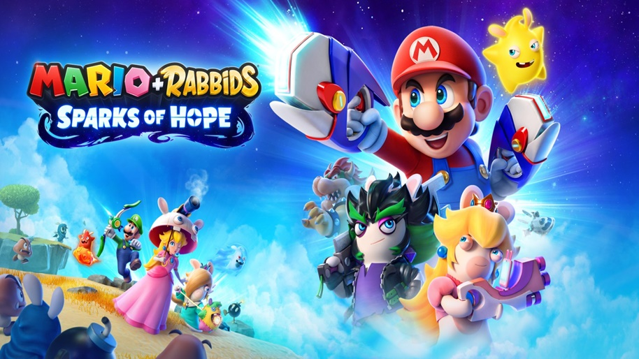
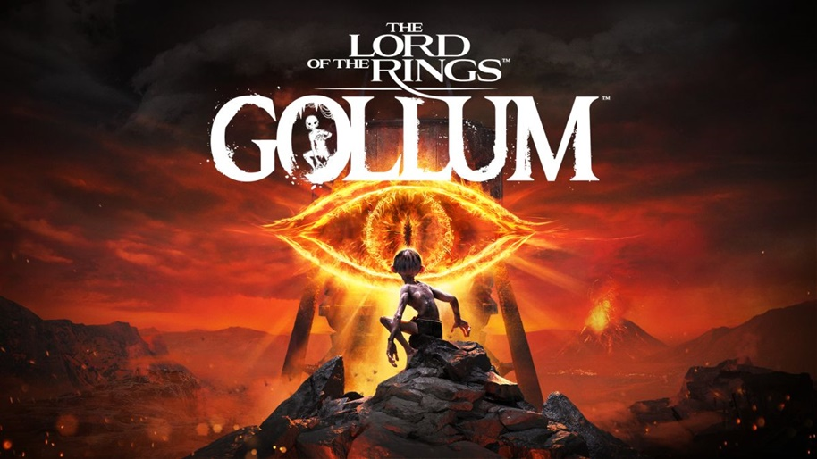

1. Mario Bros
Mario + Rabbids Kingdom Battle é um RPG eletrônico baseado em turnos desenvolvido e distribuído pela Ubisoft. É um crossover entre a franquia Mario, da Nintendo, e a franquia Raving Rabbids, da Ubisoft, tendo sido lançado mundialmente em agosto de 2017.
foi anunciado de forma quase que acidental: o jogo vazou na Internet antes de ser revelado e virou piada. Afinal, o que esperar de um título que misturava a série consagrada de Super Mario com os novatos Rabbids, da Ubisoft? Não era para ser levado a sério. Porém, esse é justamente seu ponto alto e principal atrativo. O game é divertido e foi lançado no Nintendo Switch com forte apelo nostálgico para aqueles que curtem estratégia, mas com algo que te prende até o fim, sem perder o ritmo. Leia nossa análise completa e
Trailer oficial2. Olli Olli

OlliOlli World é um jogo eletrônico de esporte e skate desenvolvido pela Roll7 e publicado pela Private Division. Foi lançado em 8 de fevereiro de 2022 para Microsoft Windows, Nintendo Switch, PlayStation 4, PlayStation 5, Xbox One e Xbox Series X/S. Recebeu avaliações geralmente favoráveis pela crítica. OlliOlli World é um novo jogo de skate estilo plataforma, cheio de personalidade. Faça um flip e mande ver no mundo vibrante e vívido de Radlandia, encontre personagens interessantes enquanto manda um grind, um trick ou air, numa jornada para descobrir os deuses místicos do skate na sua missão por Gnarvana.
Desbrave um mundo cativante enquanto encara suas missões e desafios, e conhece novos amigos no caminho. Personalize a aparência, as manobras e o estilo do seu personagem enquanto vivencia fases exploráveis, com diversos caminhos que oferecem oportunidades para expressar os estilos únicos de cada jogador. Desafie o mundo em Ligas ou instigue um amigo a bater suas melhores manobras numa das milhões de fases compartilháveis. Experimente a profundidade, acessibilidade e liberdade como jogador, conforme mergulha na jogabilidade fluida característica de OlliOlli World. OlliOlli World é o terceiro lançamento da aclamada série OlliOlli do Roll7, um estúdio independente vencedor do BAFTA e de diversos outros prêmios.
Trailer Oficial3. Pokémon Legends Arceus

Pokémon Legends: Arceus é um jogo eletrônico de RPG de ação desenvolvido pela Game Freak e publicado pela The Pokémon Company e Nintendo. Faz parte da oitava geração da série de jogos eletrônicos Pokémon e serve como uma prequela para os jogos eletrônicos de RPG do Nintendo DS, Pokémon Diamond e Pearl, de 2006. O universo de Pokémon é gigantesco, tanto no número de monstrinhos que já existem quanto nos jogos que trazem eles como protagonistas. Mas não tenho dúvidas que o Pokémon Legends: Arceus é o que passou mais perto de entregar a experiência que eu queria desde os primeiros games, lá nos tempos do Game Boy. Esse título une a experiência de jornada e exploração que Pokémon Red, Blue e Green tentavam trazer (com muitas limitações técnicas), diversas possibilidades de interação com o mundo do game e, especialmente, com os pokémon que o habitam. Vamos passar mais das nossas impressões no restante da análise!
Pokémon Legends é facilmente o jogo da franquia dos monstrinhos com a mais satisfatória sensação de exploração. Andar pelo mundo e descobrir novas cidades sempre foi um ponto central da maioria dos games, mas em Legends temos um campo aberto para exploração, com muitos acidentes geográficos e pokémon povoando eles. É bastante empolgante desbloquear uma nova região, pois sempre há novidades no bioma, geografia e criaturas novas para achar.
Trailer Oficial4. Metroi Prime 4

Metroid Prime 4 é um futuro jogo eletrônico de ação-aventura desenvolvido pela Retro Studios e publicado pela Nintendo. É o décimo quinto título da série Metroid e o quarto da subssérie Metroid Prime, sendo uma sequência de Metroid Prime 3: Corruption de 2007. Em janeiro de 2019, a Nintendo deixou os fãs de Metroid desapontados ao revelar que Metroid Prime 4 iria recomeçar seu desenvolvimento do zero, além de ser assumido pelo Retro Studios, o mesmo que trabalhou na trilogia original. De lá para cá, as informações sobre o projeto foram quase inexistentes, mas esta semana, o Retro Studios podem ter indicado que novidades estão a caminho.
No Twitter, os fãs notaram que o perfil do estúdio atualizou sua imagem de capa, revelando uma nova arte conceitual do jogo estrelado por Samus Aran. A desenvolvedora raramente atualiza suas redes sociais, com seu tuíte mais recente sendo de 27 de janeiro, quando eles publicaram algumas vagas de emprego.
Trailer Oficial5. The Lords of The Rings Gollum
The Lord of the Rings: Gollum é um futuro jogo eletrônico de ação-aventura desenvolvido pela Daedalic Entertainment e co-publicado pela Daedalic Entertainment e Nacon. É baseado em O Senhor dos Anéis e na franquia Terra Média, e segue o personagem Gollum antes dos eventos de O Senhor dos Anéis e de O Hobbit. Conforme reportado pelo Digital Trends, a Daedalic Entertainment e Nacon revelaram em um evento de gameplay hands-off que o game de O Senhor dos Anéis chegará ao PS5, PS4, Xbox One, Xbox Series, Switch e PC em 1º de setembro.
O título protagonizado por Gollum foi revelado em março de 2019. Em julho de 2021, a Nacon passou a fazer parte do desenvolvimento, e a previsão de lançamento passou para até o final de 2022. O jogo inspirado na obra de J.R.R. Tolkien terá foco em aventura e trará uma mistura de parkour com elementos stealth, além de contar com a participação de personagens conhecidos da franquia, como Galdalf e Thranduil.
Trailer Oficial